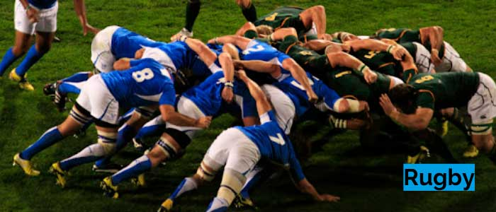
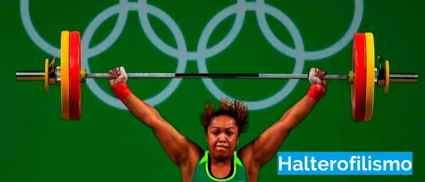
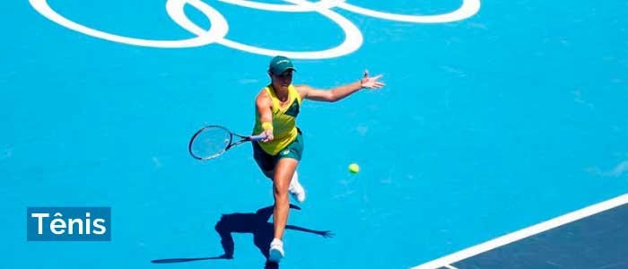
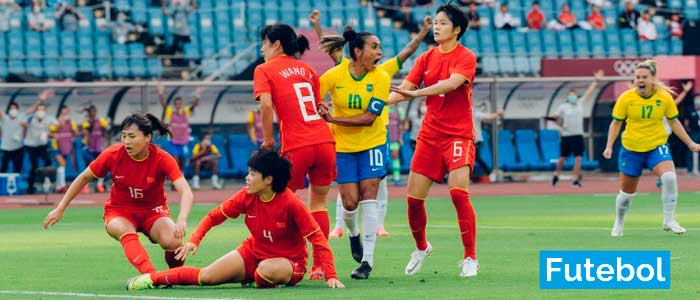
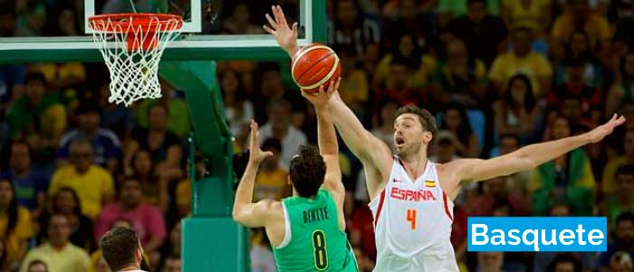
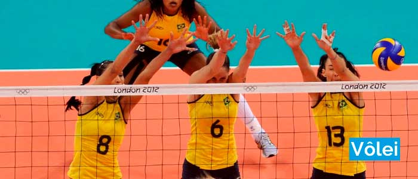
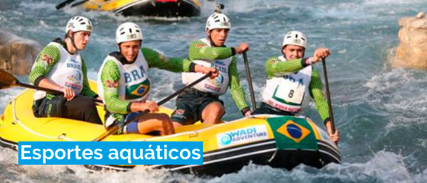
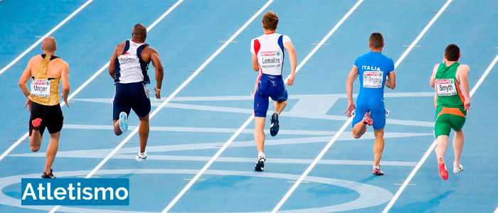
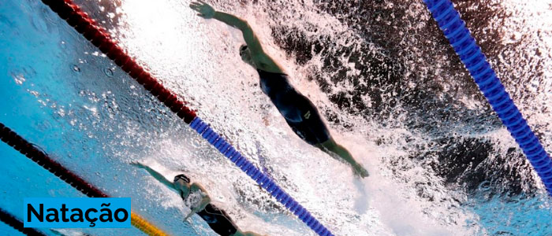
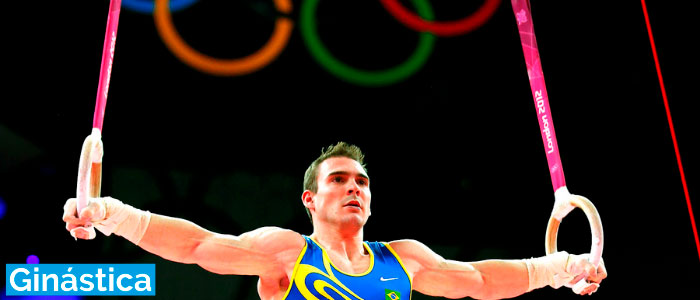

Bravura, habilidade e velocidade estarão em abundância nos torneios masculinos e femininos. O rugby é um dos esportes mais apreciados nas Olimpíadas. A equipe Fiji venceu o campeonato de rúgbi nos Jogos Olímpicos de Tókio 2020. Isso facilmente entrou na lista dos momentos históricos das Olimpíadas.
No número 9 dos 10 esportes olímpicos mais populares, temos levantamento de peso. O levantamento de peso olímpico é uma disciplina atlética no programa olímpico moderno em que o atleta tenta um levantamento único com peso máximo de uma barra. Este é um dos jogos favoritos das pessoas nas Olimpíadas. Cada levantador de peso recebe três tentativas em cada uma, e o total combinado dos dois maiores levantamentos bem sucedidos determina o resultado geral dentro de uma categoria de peso corporal. As categorias de peso corporal são diferentes para competidores masculinos e femininos.
No oitavo lugar entre os dez esportes olímpicos mais populares, temos o tênis. O tênis foi desafiado pela primeira vez como esporte olímpico nos Jogos Olímpicos de 1896, realizados em Atenas.Apenas em 1900 as mulheres foram autorizadas a competir.
No 7º lugar entre os 10 esportes olímpicos mais populares, temos o futebol. O futebol é um dos esportes mais populares em todo o mundo e é óbvio que também é um esporte olímpico. Bilhões de pessoas assistem ao futebol e idolatram os jogadores de futebol.
No 6º lugar entre os 10 principais esportes dos jogos olímpicos , temos o basquete. Desde 1936, este jogo é um esporte olímpico masculino. Exatamente 40 anos depois, em 1976, o basquete feminino também foi incluído nas Olimpíadas. Até hoje, é um dos esportes mais assistidos na América , bem como em outros países do primeiro mundo.
O Voleibol Competitivo faz parte das Olimpíadas de verão desde o ano de 1964. E, ao contrário de outros jogos, era aplicável tanto para homens quanto para mulheres. No início, o vôlei passou a fazer parte de um evento esportivo de demonstração americano. Mas agora, é um dos dez principais esportes dos jogos olímpicos.
Ao dizer esportes aquáticos, queremos dizer mergulho, rafting e outros. A natação não está nesta categoria porque é uma categoria enorme. A natação é um dos 10 esportes olímpicos mais populares, mas falaremos mais sobre isso posteriormente. Para além da natação, o mergulho e o rafting são também alguns dos desportos olímpicos populares existentes até então.
No terceiro lugar entre os 10 principais esportes dos jogos olímpicos, temos o atletismo. Isso pode não parecer provável, mas é. As pessoas gostam muito de jogos de atletismo e tendem a ser competitivas. Eles são uma prática muito comum entre os observadores e também entre os competidores. O programa de atletismo tem suas raízes mais antigas em eventos usados nas antigas Olimpíadas Gregas.
Este jogo tem Michael Phelps escrito nele. Ele é dono desse esporte e sabemos por quê. Com mais de 19 medalhas de ouro na natação olímpica, ele é o atleta de maior sucesso da história olímpica . Não apenas nadando, mas ele também pode ser um dos atletas vivos mais ricos. A natação é um jogo olímpico há muito tempo e as pessoas adoram assistir a esse esporte. Natação é o segundo favorito entre os 10 esportes olímpicos mais populares. Além disso, a natação é um esporte de prática saudável, e assistir a esse esporte olímpico inspirou milhares a fazer aulas de natação e ficar em forma novamente.
Em primeiro lugar no top10 dos principais esportes dos jogos olímpicos, temos a ginástica. É um esporte que envolve a realização de exercícios que exigem força, elasticidade, estabilidade, vivacidade, durabilidade e controle. Os movimentos envolvidos na ginástica contribuem para o desenvolvimento dos braços, pernas, ombros, tórax e músculos abdominais. A ginástica olímpica inclui esportes como exercícios de solo para homens e mulheres, uma barra horizontal para homens, individuais completos para homens e mulheres e outros jogos semelhantes. Também inclui barras paralelas para homens.
